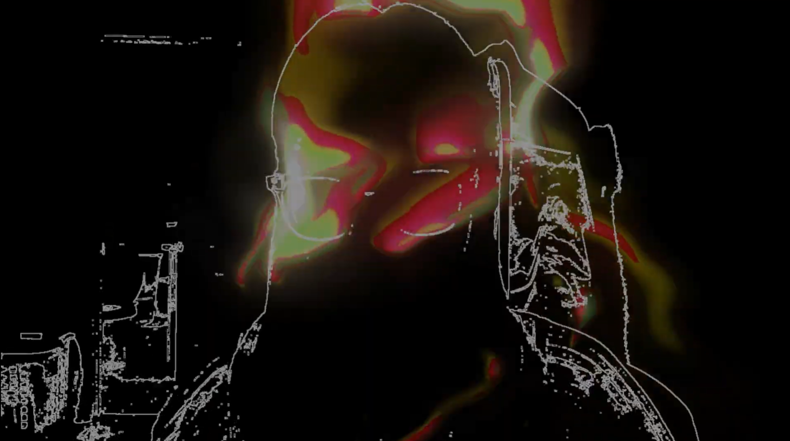

You See
Interactive Installation/Machine vision/Presence and Gaze
You See is a generative system that responds to human presence and gaze as a form of pressure rather than input to be recognized. Instead of identifying or stabilizing what it sees, the machine becomes increasingly unstable as someone approaches, lingers, or looks more directly. Distant or brief encounters leave subtle traces, while sustained attention produces visible distortion.
Through this, the work reframes sensing as an expressive process, where presence does not resolve into clarity, but actively shapes and transforms the system over time.
